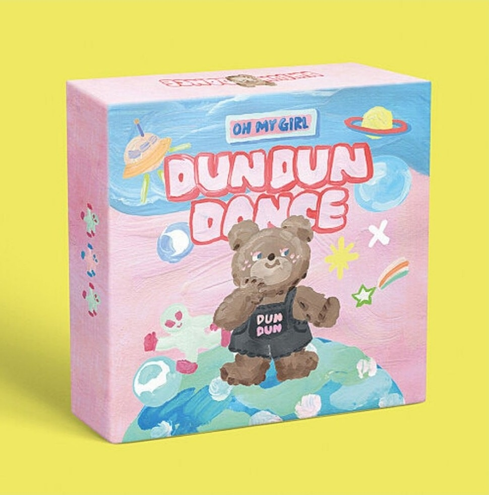

- 오마이걸
- 온앤오프
lyrics

dun dun dance, dun dun dance, dun dun dance
Just dance, just dance
Dun dun dance, dun dun dance, dun dun dance
Just dance, just dance (I just wanna dance)
유성이 비처럼 쏟아지는 하늘
그 아래 너와 함께 춤추고 싶어
색색의 옷들과 예쁜 액세서리 oh baby
흐르는 저 음악이 내 맘을 설레게 하지
I feel the disco rhythm in my body
다른 아무것도 생각하진 마
Yeah 발자국으로 가득한 무대 위에 올라
자유로운 몸짓 그 사랑스런 느낌 oh yeah
저 따분했던 하루와 일상에서 벗어나 oh tonight
Just you and I yeah 지구를 등지고 떠올라
맘껏 crazy crazy crazy 긴 춤을 춰 (긴 춤을 춰)
말리지 마 지금 내 기분은 feel so high
멀리 멀리 멀리 다 눈부셔 (눈부셔)
I just wanna dun dun dance
Dun dun dance, dun dun dance
Oh baby give me, baby give me, baby give me more
날 멈추지 마 love this song
Just wanna dun dun dance
Dun dun dance, dun dun dance
Just dance, just dance
Ay, shining like a disco ball
빨간 high heels on the road
Got my eyes on you and you got yours
저 태양이 다시 눈뜰 때까지
넌 평범한데 뭔가 달라 왠지 묘한 구석이 있네
난 가려져 있는 게 보여
우린 모두 이상해 조금씩은 yeah
사람을 가장한 낯선 존재들처럼 oh baby
Yeah 놀라지 않아 괜찮아 좀 더 가까이 와
다른 시선 따위 다 잊어버려 우리 oh oh
늘 복잡한 저세상과 기대에서 벗어나 oh tonight
Just you and I yeah 지구를 등지고 떠올라
맘껏 crazy crazy crazy 긴 춤을 춰 (긴 춤을 춰)
말리지 마 yeah 지금 내 기분은 feel so high
멀리 멀리 멀리 다 눈부셔 (다 눈부셔)
I just wanna dun dun dance
Dun dun dance, dun dun dance
Oh baby give me, baby give me, baby give me more
날 멈추지 마 love this song
Just wanna dun dun dance, dun dun dance, dun dun dance
Just dance, just dance
어차피 작은 점일 뿐야 yeah yeah
보석 같은 아이야 이야
몇 발짝 멀리 떨어져서 바라보면 돼
우린 dancing on fire
Just you and I yeah 지구를 등지고 떠올라
맘껏 crazy crazy crazy 긴 춤을 춰 (긴 춤을 춰)
말리지 마 yeah 지금 내 기분은 feel so high
멀리 멀리 멀리 다 눈부셔 (다 눈부셔)
I just wanna dun dun dance
Dun dun dance, dun dun dance
Oh baby give me, baby give me, baby give me more
날 멈추지 마 love this song
Just wanna dun dun dance
Dun dun dance, dun dun dance
Just dance, just dance
(strong)(/strong) : 글자 두껍게
(h1)(/h1) ~ (h6)(/h6) : heading (제목)
(br) : 줄바꿈
(p)(/p) : paragraph (단락)
(img src="파일명" width="크기%") : 이미지
(li)(/li) : list
(ol)
(li)(/li)
(/ol) : orderd list
(ul)
(li)(/li)
(/ul) : unorderd list
(title)(/title) : 사이트 이름 표시
(meta charset="이름") : 파일이 사용하는 엔코딩 방식 적용시킴
(!doctype html) : 맨 위에 그냥 씀
(html)(/html) : 맨앞 맨뒤에 그냥 씀
(head)(/head) : 본문을 설명하는 부분의 시작과 끝을 나타냄
(body)(/body) : 본문의 시작과 끝을 나타냄
(a)(/a) : 링크 (anchor)
(a href="링크")(/a) : Hypertext REFerence
(a href="링크" target="_blank")(/a) : 링크 클릭하면 새 탭으로 열림
(a href="링크" target="_blank" title="제목")(/a) : 링크 걸 부분 마우스 갖다 대면 무슨 링크인지 제목으로 알려줌.